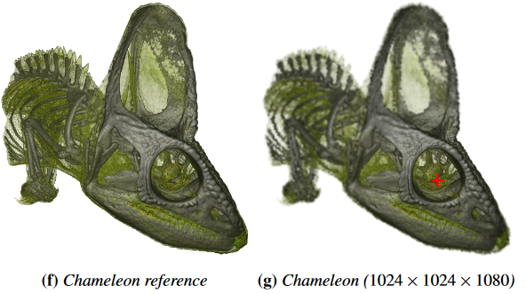

Voronoi-Based Foveated Volume Rendering


Venue. EuroVis (2019)
Abstract. Foveal vision is located in the center of the field of view with a rich impression of detail and color, whereas peripheral vision occurs on the side with more fuzzy and colorless perception. This visual acuity fall-off can be used to achieve higher frame rates by adapting rendering quality to the human visual system. Volume raycasting has unique characteristics, preventing a direct transfer of many traditional foveated rendering techniques. We present an approach that utilizes the visual acuity fall-off to accelerate volume rendering based on Linde-Buzo-Gray sampling and natural neighbor interpolation. First, we measure gaze using a stationary 1200 Hz eye-tracking system. Then, we adapt our sampling and reconstruction strategy to that gaze. Finally, we apply a temporal smoothing filter to attenuate undersampling artifacts since peripheral vision is particularly sensitive to contrast changes and movement. Our approach substantially improves rendering performance with barely perceptible changes in visual quality. We demonstrate the usefulness of our approach through performance measurements on various data sets.
Link to this page: